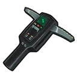

Medidor de Energia Psicocinética
Amuleto · Tier 5 · Nível 15
As leituras ficam loucas perto do Mausoléu. Será que aquele lugar é... assombrado!?
Atributos
Defesa
105
Crítico
5%
Economia
Valor
22.500
Tempo de fabricação
36min
XP do comerciante
14.500
Trabalhadores: Sacerdotisa 12, Joalheiro 6
Receita


Marcos do projeto
7
Tempo de fabricação -25%
16
-11 Ferro
30
Valor +25%
45
-7 Couro
70
Chance de qualidade +1